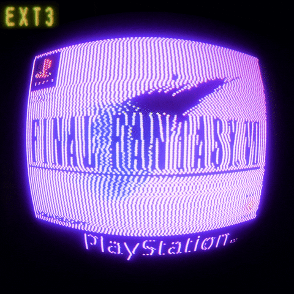

Blizz World
Blizz World

This is the homepage of my website. It serves no purpose. Use the nav links above to get to the more purposeful pages.

This is a simple site I am using to be able to easily navigate to roms and bios files for retro gaming emulation, especially now that myrient is shut down, I need easier access to roms, feel free to use it for the same purpose if you happen to stumble across this site! Just check out the handy bookmarks page.